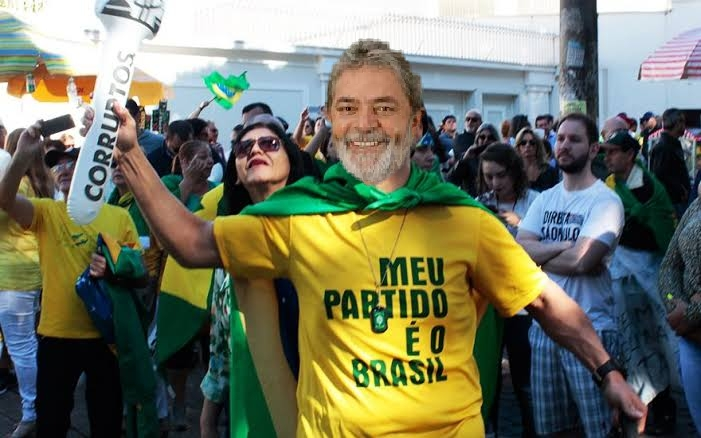

Nésta ultima sexta, dia 13, lula se assumiu bolsonarista: "eu não vou deixar o preconceito me abalar" lula também contou como se converteu ao bolsonaro: "uma testemunha de bolsonaro me perguntou se eu gostaria de ouvir a palavra de Paulo Guedes" por fim, lula nos contou como isso mudou sua vida para melhor: "agora eu tenho paulo Guedes no coração".
